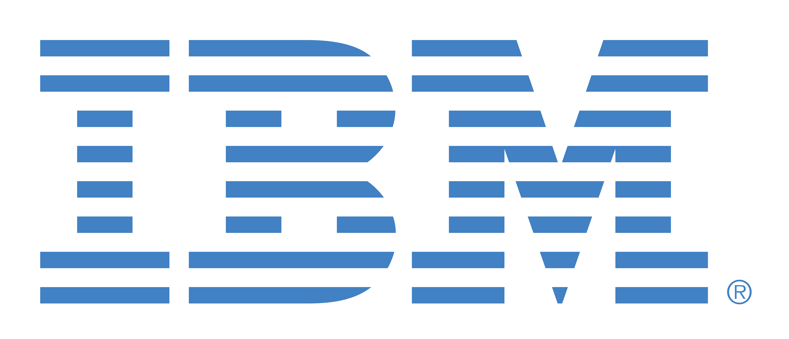

Hello There
I'm currently studying a Bachelor of Information Technology (Software Development Specialisation) with Charles Sturt University at the beautiful Port Macquarie campus.
I'm also an intern application developer with IBM, doing web development and running onboarding sessions.
Personal
I currently live in Kempsey, NSW with my lovely fiance and 2 cats. Perhaps unsurprisingly, I'm a little bit of a geek. Some of my favourite hobbies include:
- Video games
- Sci-fi and fantasy novels
- Programming
- Netflix marathons
- Magic the Gathering
- Gardening
- Crocheting
I also have a love for all things coffee, my current setup involves a Gaggia Classic Pro combined with a Baratza Encore grinder (not an ideal grinder for espresso I know, planning an upgrade).
Professional
I currently work as an application developer at IBM as an intern, a job I absolutely love doing. At the moment I'm working to support and upgrade a web application primarily using a JavaScript / TypeScript stack, using a NodeJS and Express server along with a NextJS frontend, with a little sprinkle of Python here and there for data processing purposes.
I've picked up a fair few skills in this role, and am always in the process of learning something new. Right now my interest is in learning the Apple development ecosystem, so I'm currently in the process of improving my Swift programming knowledge and getting more familiar with Apples 2 major UI frameworks, UIKit and SwiftUI (just incase you're wondering, I'm team SwiftUI).
Although I'm working in a tech role, most of my previous professional experience is in the hospitality industry, working both as a barista and (when needed) a cook.